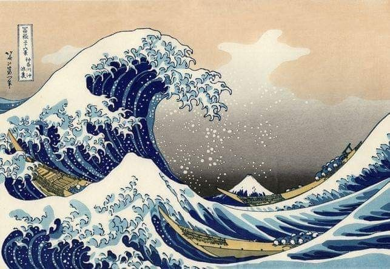

La Gran Ola De Kanagawa
La Gran Ola de Kanagawa es una famosa estampa xilográfica creada por el artista japonés Katsushika Hokusai entre 1830 y 1833 durante el período Edo. Esta obra representa una ola gigante que amenaza con cubrir una pequeña embarcación, interpretándose como una metáfora de la vulnerabilidad humana frente a la naturaleza. En el fondo, la silueta del Monte Fuji añade una sensación de serenidad y eternidad.
Información de la Pintura
| Año | Artista | Estilo |
|---|---|---|
| 1830 | Katsushika Hokusai | Ukiyo-e, Arte Japonés |
Otros Cuadros del Artista
- Fuji rojo
- Oceans of Wisdom
- Tormenta bajo la cumbre